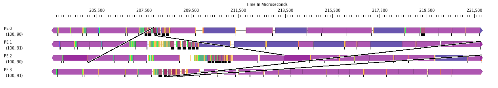

--- 
title: Tools
homec: home 
tutorialc: tutorial 
applicationsc: applications 
miniAppsc: miniApps 
downloadc: download
toolsc: tools selected toolsSelected
helpc: help
---
<div id="toolsContainer">
<h1>Tools</h1>
<div id="Projections">
	<br/>
	<div id="research_header"><h2>Parallel Performance Analysis: Projections</h2></div>
	<br/>
	<div id="projectionResearchPage">
	Projections is a performance analysis/visualization framework that helps you understand and investigate performance-related problems in your parallel (CHARM++) application. It is a framework with an event tracing component with features that allow you to control the amount of information generated and to a lesser degree the amount of perturbation the tracing activities introduce into the application. It also has a Java-based visualization and analysis component with various views that will help present the performance information in a visually useful manner. The research page can be found <a href="https://charm.cs.illinois.edu/research/parallel_perf">here</a>.
        <figure>
        
        
        </figure>

        The above two figures show the timeline and time-profile view in Projections.  In the timeline view, user can see the messages between processors. In the time-profile view, user can observe the usage of the application as time goes by.
	<br/> 
	</div>
	<br/>
	<br />
	<div id="projectionGit">
		<p>The latest development version of Projections can be downloaded directly from our source archive. The Git version control system is used, which is available from <a href="http://git-scm.com">here</a>.</p>
		<ol>
			<li>
			<p>Check out Projections from the repository:</p>
			<pre>git clone https://github.com/UIUC-PPL/projections</pre>
			</li>
			<li>
			<p>This will create a directory named <tt>projections</tt>. Move to this directory:</p>
			<pre>cd projections</pre>
			</li>
			<li>
			<p>And now build Projections:</p>
			<pre>make</pre>
			</li>
		</ol>	
	</div>
	<br />
	<div id="projectionManual">
	 The manual can be found <a href="https://charm.readthedocs.io/en/latest/projections/manual.html">here</a>.
	</div>
</div>

<div id="debugger">
	<br/>
	<div id="research_header"><h2>Parallel Debugging: Charm Debug</h2></div>
	<br/>
    <div>Charm++ offers a variety of parallel debugging options, from the extremely basic to the extremely sophisticated. The traditional debugging methods, such as logging (via the CkPrintf routine) and interactive debugging (via the "++debug" command line option) are supported under Charm++.
	<br />
	<br />
	In addition, Charm++ offers several additional features designed to simplify application development. Linking with "-memory paranoid" checks all dynamic heap allocation calls for common errors, such as double-delete, random-delete, read-after-delete, buffer over- and under-write errors. Charm++, when compiled without "-DCMK_OPTIMIZE", contains hundreds of assertions to catch invalid parameters and uninitialized data passed to API routines.
	<br />
	<br />
	Charm Debug is a sophisticated parallel debugger, with the ability to
        set breakpoints, examine variables, objects, and messages across the
        entire machine. The design of this debugger is described in the <a href="https://charm.cs.illinois.edu/research/parallel_debug">research page</a>.
	 </div>
	<br />
	<br />

	 <div id="charmDebugGit">
		<p>The latest development version of Charm Debug can be downloaded directly from our source archive. The Git version control system is used, which is available from <a href="http://git-scm.com">here</a>.</p>
		<ol>
			<li>
			<p>Check out Charm Debug from the repository:</p>
			<pre>git clone https://github.com/UIUC-PPL/ccs_tools</pre>
			</li>
			<li>
			<p>This will create a directory named <tt>ccs_tools</tt>. Move to this directory:</p>
			<pre>cd ccs_tools</pre>
			</li>
			<li>
			<p>And now build Charm Debug:</p>
			<pre>ant</pre>
			</li>
		</ol>	
	</div>
	<br />
	<div id="charmDebugManual">
	 The manual can be found <a href="https://charm.readthedocs.io/en/latest/debugger/manual.html">here</a>.
	</div>
</div>
</div>
